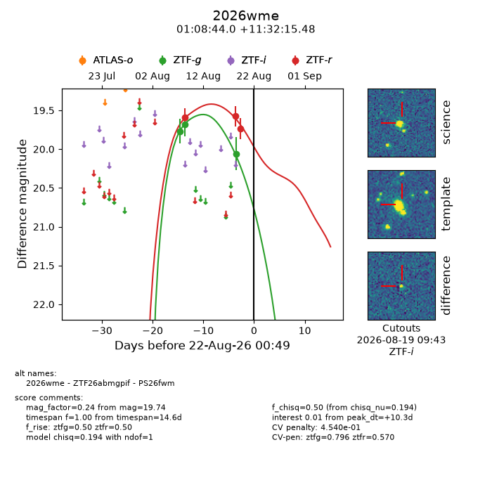
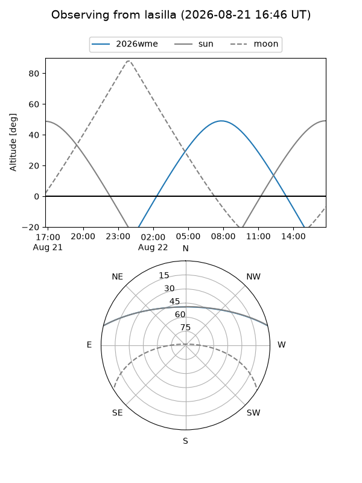
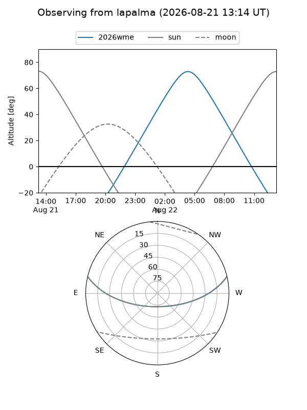
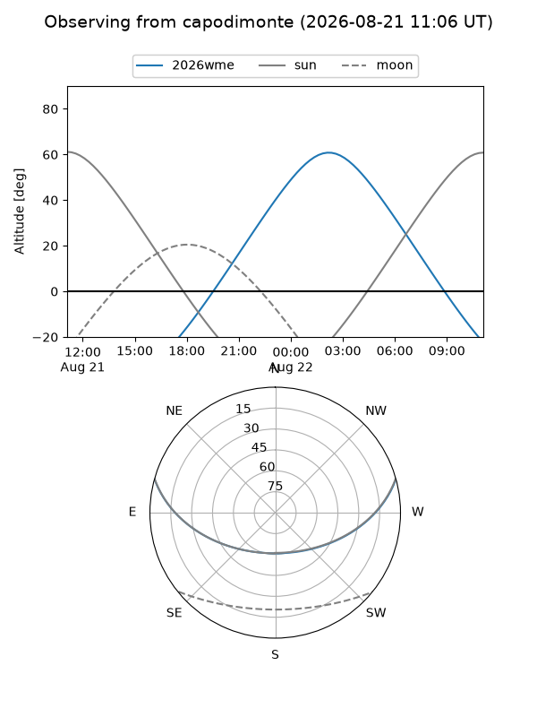
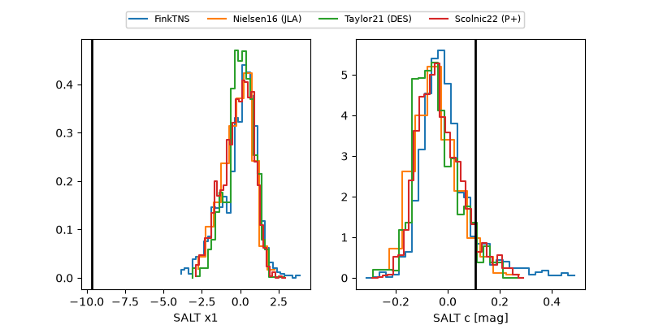

2026wme
Target 2026wme at 2026-08-22 12:38
Aliases and brokers:
FINK-ZTF: ztf.fink-portal.org/ZTF26abmgpif
Lasair-ZTF: lasair-ztf.lsst.ac.uk/objects/ZTF26abmgpif
ALeRCE-ZTF: alerce.online/object/ZTF26abmgpif
YSE-PZ: ziggy.ucolick.org/yse/transient_detail/2026wme
TNS name: wis-tns.org/object/2026wme
Direct TNS query: direct search
alt names
ZTF26abmgpif (ztf,fink_ztf)
2026wme (tns,yse)
PS26fwm (panstarrs)
Coordinates:
equatorial (ra, dec) = 17.1834,+11.53763
equatorial (HMS+DMS) = 01:08:44.02,+11:32:15.48
galactic (l, b) = (129.6888,-51.10706)
Flags:
TNS type: nan
peak dt: +10.8
likely cv: !!
Photometry:
last ztfg=20.06, ztfr=19.74
3 ztfg, 3 ztfr detections
Lightcurve

Visibility



Additional plots
